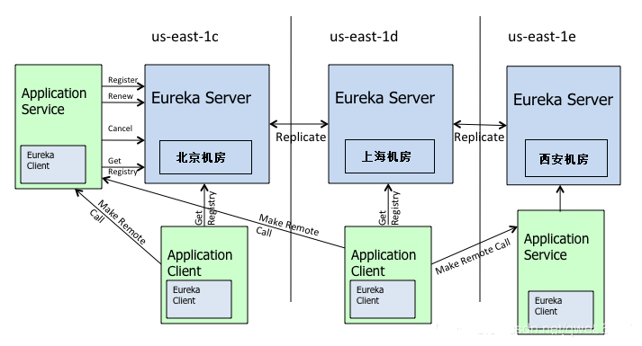
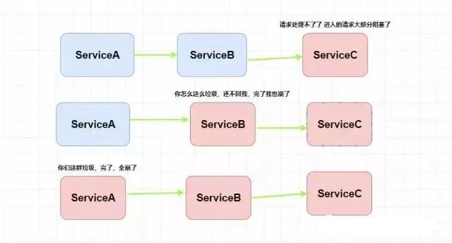
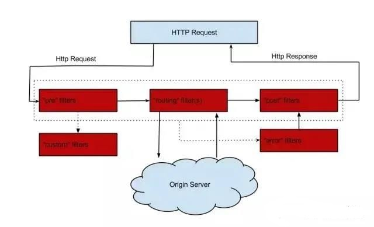

什么是Spring Cloud¶
Spring Cloud为开发人员提供了工具，以快速构建分布式系统中的某些常见模式（例如，配置管理，服务发现，断路器，智能路由，微代理，控制总线，一次性令牌，全局锁，领导选举，分布式会话，群集状态）。分布式系统的协调导致样板式样，并且使用Spring Cloud开发人员可以快速站起来实现这些样板的服务和应用程序。它们可以在任何分布式环境中正常工作，包括开发人员自己的笔记本电脑，裸机数据中心以及Cloud Foundry等托管平台。
Spring Cloud致力于为典型的用例和扩展机制提供良好的开箱即用体验，以涵盖其他用例。有如下特点
-
分布式/版本化配置
-
服务注册和发现
-
路由
-
服务到服务的通话
-
负载均衡
-
断路器
-
全局锁
-
领导选举和集群状态
-
分布式消息传递
官方果然官方，介绍都这么有板有眼的。
我所理解的 Spring Cloud 就是微服务系统架构的一站式解决方案，在平时我们构建微服务的过程中需要做如 服务发现注册 、配置中心 、消息总线 、负载均衡 、断路器 、数据监控 等操作，而 Spring Cloud 为我们提供了一套简易的编程模型，使我们能在 Spring Boot 的基础上轻松地实现微服务项目的构建。
Spring Cloud 的版本¶
Spring Cloud 的版本号并不是我们通常见的数字版本号，而是一些很奇怪的单词。这些单词均为英国伦敦地铁站的站名。同时根据字母表的顺序来对应版本时间顺序，比如：最早 的 Release 版本 Angel，第二个 Release 版本 Brixton（英国地名），然后是 Camden、 Dalston、Edgware、Finchley、Greenwich、Hoxton。
Spring Cloud 的服务发现框架——Eureka¶
Eureka是基于REST（代表性状态转移）的服务，主要在AWS云中用于定位服务，以实现负载均衡和中间层服务器的故障转移。我们称此服务为Eureka服务器。Eureka还带有一个基于Java的客户端组件Eureka Client，它使与服务的交互变得更加容易。客户端还具有一个内置的负载平衡器，可以执行基本的循环负载平衡。在Netflix，更复杂的负载均衡器将Eureka包装起来，以基于流量，资源使用，错误条件等多种因素提供加权负载均衡，以提供出色的弹性。
总的来说，Eureka 就是一个服务发现框架。何为服务，何又为发现呢？
举一个生活中的例子，就比如我们平时租房子找中介的事情。
在没有中介的时候我们需要一个一个去寻找是否有房屋要出租的房东，这显然会非常的费力，一你找凭一个人的能力是找不到很多房源供你选择，再者你也懒得这么找下去(找了这么久，没有合适的只能将就)。这里的我们就相当于微服务中的 Consumer ，而那些房东就相当于微服务中的 Provider 。消费者 Consumer 需要调用提供者 Provider 提供的一些服务，就像我们现在需要租他们的房子一样。
但是如果只是租客和房东之间进行寻找的话，他们的效率是很低的，房东找不到租客赚不到钱，租客找不到房东住不了房。所以，后来房东肯定就想到了广播自己的房源信息(比如在街边贴贴小广告)，这样对于房东来说已经完成他的任务(将房源公布出去)，但是有两个问题就出现了。第一、其他不是租客的都能收到这种租房消息，这在现实世界没什么，但是在计算机的世界中就会出现资源消耗的问题了。第二、租客这样还是很难找到你，试想一下我需要租房，我还需要东一个西一个地去找街边小广告，麻不麻烦？
那怎么办呢？我们当然不会那么傻乎乎的，第一时间就是去找 中介 呀，它为我们提供了统一房源的地方，我们消费者只需要跑到它那里去找就行了。而对于房东来说，他们也只需要把房源在中介那里发布就行了。
那么现在，我们的模式就是这样的了。

但是，这个时候还会出现一些问题。
1.房东注册之后如果不想卖房子了怎么办？我们是不是需要让房东定期续约？如果房东不进行续约是不是要将他们从中介那里的注册列表中移除。
2.租客是不是也要进行注册呢？不然合同乙方怎么来呢？
3.中介可不可以做连锁店呢？如果这一个店因为某些不可抗力因素而无法使用，那么我们是否可以换一个连锁店呢？
针对上面的问题我们来重新构建一下上面的模式图

好了，举完这个例子我们就可以来看关于 Eureka 的一些基础概念了，你会发现这东西理解起来怎么这么简单。
服务发现：其实就是一个“中介”，整个过程中有三个角色：服务提供者(出租房子的)、服务消费者(租客)、服务中介(房屋中介)。
服务提供者：就是提供一些自己能够执行的一些服务给外界。
服务消费者：就是需要使用一些服务的“用户”。
服务中介：其实就是服务提供者和服务消费者之间的“桥梁”，服务提供者可以把自己注册到服务中介那里，而服务消费者如需要消费一些服务(使用一些功能)就可以在服务中介中寻找注册在服务中介的服务提供者。
Eureka 工作原理¶
Eureka 作为 Spring Cloud 体系中最核心、默认的注册中心组件，研究它的运行机制，有助于我们在工作中更好地使用它。
Eureka 核心概念¶
回到上节的服务注册调用示意图，服务提供者和服务的消费者，本质上也是 Eureka Client 角色。整体上可以分为两个主体：Eureka Server 和 Eureka Client。

Eureka Server：注册中心服务端¶
注册中心服务端主要对外提供了三个功能：
- 服务注册
服务提供者启动时，会通过 Eureka Client 向 Eureka Server 注册信息，Eureka Server 会存储该服务的信息，Eureka Server 内部有二层缓存机制来维护整个注册表
- 提供注册表
服务消费者在调用服务时，如果 Eureka Client 没有缓存注册表的话，会从 Eureka Server 获取最新的注册表
- 同步状态
Eureka Client 通过注册、心跳机制和 Eureka Server 同步当前客户端的状态。
Eureka Client：注册中心客户端¶
Eureka Client 是一个 Java 客户端，用于简化与 Eureka Server 的交互。Eureka Client 会拉取、更新和缓存 Eureka Server 中的信息。因此当所有的 Eureka Server 节点都宕掉，服务消费者依然可以使用缓存中的信息找到服务提供者，但是当服务有更改的时候会出现信息不一致。
- Register: 服务注册
服务的提供者，将自身注册到注册中心，服务提供者也是一个 Eureka Client。当 Eureka Client 向 Eureka Server 注册时，它提供自身的元数据，比如 IP 地址、端口，运行状况指示符 URL，主页等。
- Renew: 服务续约
Eureka Client 会每隔 30 秒发送一次心跳来续约。 通过续约来告知 Eureka Server 该 Eureka Client 运行正常，没有出现问题。 默认情况下，如果 Eureka Server 在 90 秒内没有收到 Eureka Client 的续约，Server 端会将实例从其注册表中删除，此时间可配置，一般情况不建议更改
- 服务续约的两个重要属性
服务续约任务的调用间隔时间，默认为30秒 eureka.instance.lease-renewal-interval-in-seconds=30 服务失效的时间，默认为90秒。 eureka.instance.lease-expiration-duration-in-seconds=90
- Eviction 服务剔除
当 Eureka Client 和 Eureka Server 不再有心跳时，Eureka Server 会将该服务实例从服务注册列表中删除，即服务剔除。
- Cancel: 服务下线
Eureka Client 在程序关闭时向 Eureka Server 发送取消请求。 发送请求后，该客户端实例信息将从 Eureka Server 的实例注册表中删除。该下线请求不会自动完成，它需要调用以下内容：
DiscoveryManager.getInstance().shutdownComponent()；
- GetRegisty: 获取注册列表信息
Eureka Client 从服务器获取注册表信息，并将其缓存在本地。客户端会使用该信息查找其他服务，从而进行远程调用。该注册列表信息定期（每30秒钟）更新一次。每次返回注册列表信息可能与 Eureka Client 的缓存信息不同，Eureka Client 自动处理。
如果由于某种原因导致注册列表信息不能及时匹配，Eureka Client 则会重新获取整个注册表信息。 Eureka Server 缓存注册列表信息，整个注册表以及每个应用程序的信息进行了压缩，压缩内容和没有压缩的内容完全相同。Eureka Client 和 Eureka Server 可以使用 JSON/XML 格式进行通讯。在默认情况下 Eureka Client 使用压缩 JSON 格式来获取注册列表的信息。
- 获取服务是服务消费者的基础，所以必有两个重要参数需要注意：
# 启用服务消费者从注册中心拉取服务列表的功能 eureka.client.fetch-registry=true # 设置服务消费者从注册中心拉取服务列表的间隔 eureka.client.registry-fetch-interval-seconds=30
- Remote Call: 远程调用 当 Eureka Client 从注册中心获取到服务提供者信息后，就可以通过 Http 请求调用对应的服务；服务提供者有多个时，Eureka Client 客户端会通过 Ribbon 自动进行负载均衡。
自我保护机制¶
默认情况下，如果 Eureka Server 在一定的 90s 内没有接收到某个微服务实例的心跳，会注销该实例。但是在微服务架构下服务之间通常都是跨进程调用，网络通信往往会面临着各种问题，比如微服务状态正常，网络分区故障，导致此实例被注销。
固定时间内大量实例被注销，可能会严重威胁整个微服务架构的可用性。为了解决这个问题，Eureka 开发了自我保护机制，那么什么是自我保护机制呢？
Eureka Server 在运行期间会去统计心跳失败比例在 15 分钟之内是否低于 85%，如果低于 85%，Eureka Server 即会进入自我保护机制。
Eureka Server 触发自我保护机制后，页面会出现提示：¶

Eureka Server 进入自我保护机制，会出现以下几种情况：¶
(1 Eureka 不再从注册列表中移除因为长时间没收到心跳而应该过期的服务 (2 Eureka 仍然能够接受新服务的注册和查询请求，但是不会被同步到其它节点上(即保证当前节点依然可用) (3 当网络稳定时，当前实例新的注册信息会被同步到其它节点中
Eureka 自我保护机制是为了防止误杀服务而提供的一个机制。当个别客户端出现心跳失联时，则认为是客户端的问题，剔除掉客户端；当 Eureka 捕获到大量的心跳失败时，则认为可能是网络问题，进入自我保护机制；当客户端心跳恢复时，Eureka 会自动退出自我保护机制。
如果在保护期内刚好这个服务提供者非正常下线了，此时服务消费者就会拿到一个无效的服务实例，即会调用失败。对于这个问题需要服务消费者端要有一些容错机制，如重试，断路器等。
- 通过在 Eureka Server 配置如下参数，开启或者关闭保护机制，生产环境建议打开：
eureka.server.enable-self-preservation=true
Eureka 集群原理¶
再来看看 Eureka 集群的工作原理。我们假设有三台 Eureka Server 组成的集群，第一台 Eureka Server 在北京机房，另外两台 Eureka Server 在深圳和西安机房。这样三台 Eureka Server 就组建成了一个跨区域的高可用集群，只要三个地方的任意一个机房不出现问题，都不会影响整个架构的稳定性。

从图中可以看出 Eureka Server 集群相互之间通过 Replicate 来同步数据，相互之间不区分主节点和从节点，所有的节点都是平等的。在这种架构中，节点通过彼此互相注册来提高可用性，每个节点需要添加一个或多个有效的 serviceUrl 指向其他节点。
如果某台 Eureka Server 宕机，Eureka Client 的请求会自动切换到新的 Eureka Server 节点。当宕机的服务器重新恢复后，Eureka 会再次将其纳入到服务器集群管理之中。当节点开始接受客户端请求时，所有的操作都会进行节点间复制，将请求复制到其它 Eureka Server 当前所知的所有节点中。
另外 Eureka Server 的同步遵循着一个非常简单的原则：只要有一条边将节点连接，就可以进行信息传播与同步。所以，如果存在多个节点，只需要将节点之间两两连接起来形成通路，那么其它注册中心都可以共享信息。每个 Eureka Server 同时也是 Eureka Client，多个 Eureka Server 之间通过 P2P 的方式完成服务注册表的同步。
Eureka Server 集群之间的状态是采用异步方式同步的，所以不保证节点间的状态一定是一致的，不过基本能保证最终状态是一致的。
Eureka 分区¶
Eureka 提供了 Region 和 Zone 两个概念来进行分区，这两个概念均来自于亚马逊的 AWS: region：可以理解为地理上的不同区域，比如亚洲地区，中国区或者深圳等等。没有具体大小的限制。根据项目具体的情况，可以自行合理划分 region。 zone：可以简单理解为 region 内的具体机房，比如说 region 划分为深圳，然后深圳有两个机房，就可以在此 region 之下划分出 zone1、zone2 两个 zone。
上图中的 us-east-1c、us-east-1d、us-east-1e 就代表了不同的 Zone。Zone 内的 Eureka Client 优先和 Zone 内的 Eureka Server 进行心跳同步，同样调用端优先在 Zone 内的 Eureka Server 获取服务列表，当 Zone 内的 Eureka Server 挂掉之后，才会从别的 Zone 中获取信息。
Eurka 保证 AP¶
Eureka Server 各个节点都是平等的，几个节点挂掉不会影响正常节点的工作，剩余的节点依然可以提供注册和查询服务。而 Eureka Client 在向某个 Eureka 注册时，如果发现连接失败，则会自动切换至其它节点。只要有一台 Eureka Server 还在，就能保证注册服务可用(保证可用性)，只不过查到的信息可能不是最新的(不保证强一致性)。
Eurka 工作流程¶
了解完 Eureka 核心概念，自我保护机制，以及集群内的工作原理后，我们来整体梳理一下 Eureka 的工作流程：
1、Eureka Server 启动成功，等待服务端注册。在启动过程中如果配置了集群，集群之间定时通过 Replicate 同步注册表，每个 Eureka Server 都存在独立完整的服务注册表信息
2、Eureka Client 启动时根据配置的 Eureka Server 地址去注册中心注册服务
3、Eureka Client 会每 30s 向 Eureka Server 发送一次心跳请求，证明客户端服务正常
4、当 Eureka Server 90s 内没有收到 Eureka Client 的心跳，注册中心则认为该节点失效，会注销该实例
5、单位时间内 Eureka Server 统计到有大量的 Eureka Client 没有上送心跳，则认为可能为网络异常，进入自我保护机制，不再剔除没有上送心跳的客户端
6、当 Eureka Client 心跳请求恢复正常之后，Eureka Server 自动退出自我保护模式
7、Eureka Client 定时全量或者增量从注册中心获取服务注册表，并且将获取到的信息缓存到本地
8、服务调用时，Eureka Client 会先从本地缓存找寻调取的服务。如果获取不到，先从注册中心刷新注册表，再同步到本地缓存
9、Eureka Client 获取到目标服务器信息，发起服务调用
10、Eureka Client 程序关闭时向 Eureka Server 发送取消请求，Eureka Server 将实例从注册表中删除
这就是Eurka基本工作流程
Eurka 总结¶
讲了 Eureka 核心概念、Eureka 自我保护机制和 Eureka 集群原理。通过分析 Eureka 工作原理，我可以明显地感觉到 Eureka 的设计之巧妙，通过一些列的机制，完美地解决了注册中心的稳定性和高可用性。
Eureka 为了保障注册中心的高可用性，容忍了数据的非强一致性，服务节点间的数据可能不一致， Client-Server 间的数据可能不一致。比较适合跨越多机房、对注册中心服务可用性要求较高的使用场景。
负载均衡之 Ribbon¶
什么是 RestTemplate?
不是讲 Ribbon 么？怎么扯到了 RestTemplate 了？你先别急，听我慢慢道来。 我不听我不听我不听🙉🙉🙉。
我就说一句！RestTemplate是Spring提供的一个访问Http服务的客户端类，怎么说呢？就是微服务之间的调用是使用的 RestTemplate 。比如这个时候我们 消费者B 需要调用 提供者A 所提供的服务我们就需要这么写。如我下面的伪代码。
@Autowired private RestTemplate restTemplate; // 这里是提供者A的ip地址，但是如果使用了 Eureka 那么就应该是提供者A的名称 private static final String SERVICE_PROVIDER_A = "http://localhost:8081"; @PostMapping("/judge") public boolean judge(@RequestBody Request request) { String url = SERVICE_PROVIDER_A + "/service1"; return restTemplate.postForObject(url, request, Boolean.class); }
如果你对源码感兴趣的话，你会发现上面我们所讲的 Eureka 框架中的 注册、续约 等，底层都是使用的 RestTemplate 。
为什么需要 Ribbon？
Ribbon 是 Netflix 公司的一个开源的负载均衡 项目，是一个客户端/进程内负载均衡器，运行在消费者端
我们再举个例子，比如我们设计了一个秒杀系统，但是为了整个系统的 高可用 ，我们需要将这个系统做一个集群，而这个时候我们消费者就可以拥有多个秒杀系统的调用途径了，如下图。

如果这个时候我们没有进行一些 均衡操作 ，如果我们对 秒杀系统1 进行大量的调用，而另外两个基本不请求，就会导致 秒杀系统1 崩溃，而另外两个就变成了傀儡，那么我们为什么还要做集群，我们高可用体现的意义又在哪呢？
所以 Ribbon 出现了，注意我们上面加粗的几个字——运行在消费者端。指的是，Ribbon 是运行在消费者端的负载均衡器，如下图。

其工作原理就是 Consumer 端获取到了所有的服务列表之后，在其内部使用负载均衡算法，进行对多个系统的调用。
Nginx 和 Ribbon 的对比¶
提到 负载均衡 就不得不提到大名鼎鼎的 Nignx 了，而和 Ribbon 不同的是，它是一种集中式的负载均衡器。
何为集中式呢？简单理解就是 将所有请求都集中起来，然后再进行负载均衡。如下图。

我们可以看到 Nginx 是接收了所有的请求进行负载均衡的，而对于 Ribbon 来说它是在消费者端进行的负载均衡。如下图。

请注意 Request 的位置，在 Nginx 中请求是先进入负载均衡器，而在 Ribbon 中是先在客户端进行负载均衡才进行请求的。
Ribbon 的几种负载均衡算法¶
负载均衡，不管 Nginx 还是 Ribbon 都需要其算法的支持，如果我没记错的话 Nginx 使用的是 轮询和加权轮询算法。而在 Ribbon 中有更多的负载均衡调度算法，其默认是使用的 RoundRobinRule 轮询策略。
RoundRobinRule：轮询策略。Ribbon 默认采用的策略。若经过一轮轮询没有找到可用的 provider，其最多轮询 10 轮。若最终还没有找到，则返回 null。 RandomRule: 随机策略，从所有可用的 provider 中随机选择一个。 RetryRule: 重试策略。先按照 RoundRobinRule 策略获取 provider，若获取失败，则在指定的时限内重试。默认的时限为 500 毫秒。
🐦🐦🐦 还有很多，这里不一一举🌰了，你最需要知道的是默认轮询算法，并且可以更换默认的负载均衡算法，只需要在配置文件中做出修改就行。
providerName:
ribbon:
NFLoadBalancerRuleClassName: com.netflix.loadbalancer.RandomRule
当然，在 Ribbon 中你还可以自定义负载均衡算法，你只需要实现 IRule 接口，然后修改配置文件或者自定义 Java Config 类。
什么是 Open Feign¶
有了 Eureka，RestTemplate，Ribbon 我们就可以😃愉快地进行服务间的调用了，但是使用 RestTemplate 还是不方便，我们每次都要进行这样的调用
@Autowired private RestTemplate restTemplate; // 这里是提供者A的Ip地址，但是如果使用了Eureka那么就应该是提供者A的名称 private static final String SERVICE_PROVIDER_A="http://localhost:8081"; @PostMapping("judge") public boolean judge(@RequestBody Request request){ String url=SERVICE_PROVIDER_A+"/service1"; //是不是太麻烦了？？？每次都要url、请求、返回类型的 return restTemplate.postForObject(url,request,Boolean.class) }
这样每次都调用 RestRemplate 的 API 是否太麻烦，我能不能像调用原来代码一样进行各个服务间的调用呢？ 💡💡💡聪明的小朋友肯定想到了，那就用 映射 呀，就像域名和IP地址的映射。我们可以将被调用的服务代码映射到消费者端，这样我们就可以 “无缝开发”啦。
OpenFeign 也是运行在消费者端的，使用 Ribbon 进行负载均衡，所以 OpenFeign 直接内置了 Ribbon。
在导入了 Open Feign 之后我们就可以进行愉快编写 Consumer 端代码了。
//使用@FeignClient 注解来指定提供者的名字 @FeignClient("eureka-client-provider") public interface TestClient{ // 这里一定要注意需要使用的是提供者那端的请求相对路径，这里就相对与映射了 @RequestMapping(value="provider/xxx",method=RequestMethod.POST) CommonResponse<List<Plan>> getPlans(@RequestBody planGetRequest request); }
然后我们在 Controller 就可以像原来调用 Service 层代码一样调用它了。
@RestController public class TestController { //这里就相当于原来的service层代码 @Autowired private TestClient testClient; // controller 调用 service 层代码 @RequestMapping(value="/test",method=RequestMethod.POST) public CommonResponse<List<Plan>> get (@RequestBody){ return testClient.getPlans(request); } }
必不可少的 Hystrix¶
在分布式环境中，不可避免地会有许多服务依赖项中的某些失败。Hystrix是一个库，可通过添加等待时间容限和容错逻辑来帮助您控制这些分布式服务之间的交互。Hystrix通过隔离服务之间的访问点，停止服务之间的级联故障并提供后备选项来实现此目的，所有这些都可以提高系统的整体弹性。
总体来说 Hystrix 就是一个能进行 熔断 和 降级 的库，通过使用它能提高整个系统的弹性。
那么什么是 熔断和降级 呢？再举个🌰，此时我们整个微服务系统是这样的。服务A调用了服务B，服务B再调用了服务C，但是因为某些原因，服务C顶不住了，这个时候大量请求会在服务C阻塞。

服务C阻塞了还好，毕竟只是一个系统崩溃了。但是请注意这个时候因为服务C不能返回响应，那么服务B调用服务C的的请求就会阻塞，同理服务B阻塞了，那么服务A也会阻塞崩溃。
请注意，为什么阻塞会崩溃。因为这些请求会消耗占用系统的线程、IO 等资源，消耗完你这个系统服务器不就崩了么。

这就叫 服务雪崩。妈耶，上面两个 熔断 和 降级 你都没给我解释清楚，你现在又给我扯什么 服务雪崩 ？😵😵😵
别急，听我慢慢道来。
不听我也得讲下去！
所谓 熔断 就是服务雪崩的一种有效解决方案。当指定时间窗内的请求失败率达到设定阈值时，系统将通过 断路器 直接将此请求链路断开。
也就是我们上面服务B调用服务C在指定时间窗内，调用的失败率到达了一定的值，那么 Hystrix 则会自动将 服务B与C 之间的请求都断了，以免导致服务雪崩现象。
其实这里所讲的 熔断 就是指的 Hystrix 中的 断路器模式 ，你可以使用简单的 @HystrixCommand 注解来标注某个方法，这样 Hystrix 就会使用 断路器 来“包装”这个方法，每当调用时间超过指定时间时(默认为1000ms)，断路器将会中断对这个方法的调用。
当然你可以对这个注解的很多属性进行设置，比如设置超时时间，像这样。
@HystrixCommand( commandProperties = {@HystrixProperty(name = "execution.isolation.thread.timeoutInMilliseconds",value = "1200")} ) public List<Xxx> getXxxx() { // ...省略代码逻辑 }
但是，我查阅了一些博客，发现他们都将 熔断 和 降级 的概念混淆了，以我的理解，降级是为了更好的用户体验，当一个方法调用异常时，通过执行另一种代码逻辑来给用户友好的回复。这也就对应着 Hystrix 的 后备处理 模式。你可以通过设置 fallbackMethod 来给一个方法设置备用的代码逻辑。比如这个时候有一个热点新闻出现了，我们会推荐给用户查看详情，然后用户会通过id去查询新闻的详情，但是因为这条新闻太火了(比如最近什么*易对吧)，大量用户同时访问可能会导致系统崩溃，那么我们就进行 服务降级 ，一些请求会做一些降级处理比如当前人数太多请稍后查看等等。
//指定后备方案调用 @HystrixCommand(fallbackMethod="getHystrixNews") @GetMapping("/get/news") public News getNews(@PathVariable("id") int id){ //调用新闻api 代码逻辑 } public News getHystrixNews(@PathVariable("id") int id){ //做服务降级 //返回自定信息 }
什么是Hystrix之其他¶
我在阅读 《Spring微服务实战》这本书的时候还接触到了一个舱壁模式的概念。在不使用舱壁模式的情况下，服务A调用服务B，这种调用默认的是使用同一批线程来执行的，而在一个服务出现性能问题的时候，就会出现所有线程被刷爆并等待处理工作，同时阻塞新请求，最终导致程序崩溃。而舱壁模式会将远程资源调用隔离在他们自己的线程池中，以便可以控制单个表现不佳的服务，而不会使该程序崩溃。
具体其原理我推荐大家自己去了解一下，本篇文章中对舱壁模式不做过多解释。当然还有 Hystrix 仪表盘，它是用来实时监控 Hystrix 的各项指标信息的，这里我将这个问题也抛出去，希望有不了解的可以自己去搜索一下。
微服务网关——Zuul¶
ZUUL 是从设备和 web 站点到 Netflix 流应用后端的所有请求的前门。作为边界服务应用，ZUUL 是为了实现动态路由、监视、弹性和安全性而构建的。它还具有根据情况将请求路由到多个 Amazon Auto Scaling Groups（亚马逊自动缩放组，亚马逊的一种云计算方式） 的能力
在上面我们学习了 Eureka 之后我们知道了 服务提供者 是 消费者 通过 Eureka Server 进行访问的，即 Eureka Server 是 服务提供者 的统一入口。那么整个应用中存在那么多 消费者 需要用户进行调用，这个时候用户该怎样访问这些 消费者工程 呢？当然可以像之前那样直接访问这些工程。但这种方式没有统一的消费者工程调用入口，不便于访问与管理，而 Zuul 就是这样的一个对于 消费者 的统一入口。
如果学过前端的肯定都知道 Router 吧，比如 Flutter 中的路由，Vue，React中的路由，用了 Zuul 你会发现在路由功能方面和前端配置路由基本是一个理。😁 我偶尔撸撸 Flutter。
大家对网关应该很熟吧，简单来讲网关是系统唯一对外的入口，介于客户端与服务器端之间，用于对请求进行鉴权、限流、 路由、监控等功能。

没错，网关有的功能，Zuul 基本都有。而 Zuul 中最关键的就是 路由和过滤器 了，在官方文档中 Zuul 的标题就是
Router and Filter : Zuul
Zuul 的路由功能¶
- 简单配置
本来想给你们复制一些代码，但是想了想，因为各个代码配置比较零散，看起来也比较零散，我决定还是给你们画个图来解释吧。
请不要因为我这么好就给我点赞 👍 。疯狂暗示。

比如这个时候我们已经向 Eureka Server 注册了两个 Consumer 、三个 Provicer ，这个时候我们再加个 Zuul 网关应该变成这样子了。
emmm，信息量有点大，我来解释一下。关于前面的知识我就不解释了😐 。
首先，Zuul 需要向 Eureka 进行注册，注册有啥好处呢？
你傻呀，Consumer 都向 Eureka Server 进行注册了，我网关是不是只要注册就能拿到所有 Consumer 的信息了？
拿到信息有什么好处呢？
我拿到信息我是不是可以获取所有的 Consumer 的元数据(名称，ip，端口)？
拿到这些元数据有什么好处呢？拿到了我们是不是直接可以做路由映射？比如原来用户调用 Consumer1 的接口 localhost:8001/studentInfo/update 这个请求，我们是不是可以这样进行调用了呢？localhost:9000/consumer1/studentInfo/update 呢？你这样是不是恍然大悟了？
这里的url为了让更多人看懂所以没有使用 restful 风格。
上面的你理解了，那么就能理解关于 Zuul 最基本的配置了，看下面。
server:
port: 9000
eureka:
client:
service-url:
# 这里只要注册 Eureka 就行了
defaultZone: http://localhost:9997/eureka
然后在启动类上加入 @EnableZuulProxy 注解就行了。没错，就是那么简单😃。
- 统一前缀
这个很简单，就是我们可以在前面加一个统一的前缀，比如我们刚刚调用的是 localhost:9000/consumer1/studentInfo/update，这个时候我们在 yaml 配置文件中添加如下。
zuul: prefix: /zuul
这样我们就需要通过 localhost:9000/zuul/consumer1/studentInfo/update 来进行访问了。
- 路由策略配置
你会发现前面的访问方式(直接使用服务名)，需要将微服务名称暴露给用户，会存在安全性问题。所以，可以自定义路径来替代微服务名称，即自定义路由策略。
zuul:
routes:
consumer1: /FrancisQ1/**
consumer2: /FrancisQ2/**
这个时候你就可以使用 localhost:9000/zuul/FrancisQ1/studentInfo/update 进行访问了。
- 服务名屏蔽
这个时候你别以为你好了，你可以试试，在你配置完路由策略之后使用微服务名称还是可以访问的，这个时候你需要将服务名屏蔽。
zuul: ignore-services: "*"
- 路径屏蔽
Zuul 还可以指定屏蔽掉的路径 URI，即只要用户请求中包含指定的 URI 路径，那么该请求将无法访问到指定的服务。通过该方式可以限制用户的权限。
zuul: ignore-patterns: **/auto/**
这样关于 auto 的请求我们就可以过滤掉了。
** 代表匹配多级任意路径 *代表匹配一级任意路径
- 敏感请求头屏蔽
默认情况下，像 Cookie、Set-Cookie 等敏感请求头信息会被 zuul 屏蔽掉，我们可以将这些默认屏蔽去掉，当然，也可以添加要屏蔽的请求头。
- Zuul 的过滤功能
如果说，路由功能是 Zuul 的基操的话，那么过滤器就是 Zuul的利器了。毕竟所有请求都经过网关(Zuul)，那么我们可以进行各种过滤，这样我们就能实现 限流，灰度发布，权限控制 等等。
- 简单实现一个请求时间日志打印
要实现自己定义的 Filter 我们只需要继承 ZuulFilter 然后将这个过滤器类以 @Component 注解加入 Spring 容器中就行了。
在给你们看代码之前我先给你们解释一下关于过滤器的一些注意点。

过滤器类型：Pre、Routing、Post。前置Pre就是在请求之前进行过滤，Routing路由过滤器就是我们上面所讲的路由策略，而Post后置过滤器就是在 Response 之前进行过滤的过滤器。你可以观察上图结合着理解，并且下面我会给出相应的注释。
// 加入Spring容器 @Component public class PreRequestFilter extends ZuulFilter { // 返回过滤器类型 这里是前置过滤器 @Override public String filterType() { return FilterConstants.PRE_TYPE; } // 指定过滤顺序 越小越先执行，这里第一个执行 // 当然不是只真正第一个 在Zuul内置中有其他过滤器会先执行 // 那是写死的 比如 SERVLET_DETECTION_FILTER_ORDER = -3 @Override public int filterOrder() { return 0; } // 什么时候该进行过滤 // 这里我们可以进行一些判断，这样我们就可以过滤掉一些不符合规定的请求等等 @Override public boolean shouldFilter() { return true; } // 如果过滤器允许通过则怎么进行处理 @Override public Object run() throws ZuulException { // 这里我设置了全局的RequestContext并记录了请求开始时间 RequestContext ctx = RequestContext.getCurrentContext(); ctx.set("startTime", System.currentTimeMillis()); return null; } }
// lombok的日志 @Slf4j // 加入 Spring 容器 @Component public class AccessLogFilter extends ZuulFilter { // 指定该过滤器的过滤类型 // 此时是后置过滤器 @Override public String filterType() { return FilterConstants.POST_TYPE; } // SEND_RESPONSE_FILTER_ORDER 是最后一个过滤器 // 我们此过滤器在它之前执行 @Override public int filterOrder() { return FilterConstants.SEND_RESPONSE_FILTER_ORDER - 1; } @Override public boolean shouldFilter() { return true; } // 过滤时执行的策略 @Override public Object run() throws ZuulException { RequestContext context = RequestContext.getCurrentContext(); HttpServletRequest request = context.getRequest(); // 从RequestContext获取原先的开始时间 并通过它计算整个时间间隔 Long startTime = (Long) context.get("startTime"); // 这里我可以获取HttpServletRequest来获取URI并且打印出来 String uri = request.getRequestURI(); long duration = System.currentTimeMillis() - startTime; log.info("uri: " + uri + ", duration: " + duration / 100 + "ms"); return null; } }
上面就简单实现了请求时间日志打印功能，你有没有感受到 Zuul 过滤功能的强大了呢？
没有？好的、那我们再来。
- 令牌桶限流
当然不仅仅是令牌桶限流方式，Zuul 只要是限流的活它都能干，这里我只是简单举个🌰。

我先来解释一下什么是 令牌桶限流 吧。
首先我们会有个桶，如果里面没有满那么就会以一定 固定的速率 会往里面放令牌，一个请求过来首先要从桶中获取令牌，如果没有获取到，那么这个请求就拒绝，如果获取到那么就放行。关注公众号Java面试那些事儿，回复关键字面试，获取最新得面试资料。很简单吧，啊哈哈、
下面我们就通过 Zuul 的前置过滤器来实现一下令牌桶限流。
@Component @Slf4j public class RouteFilter extends ZuulFilter { // 定义一个令牌桶，每秒产生2个令牌，即每秒最多处理2个请求 private static final RateLimiter RATE_LIMITER = RateLimiter.create(2); @Override public String filterType() { return FilterConstants.PRE_TYPE; } @Override public int filterOrder() { return -5; } @Override public Object run() throws ZuulException { log.info("放行"); return null; } @Override public boolean shouldFilter() { RequestContext context = RequestContext.getCurrentContext(); if(!RATE_LIMITER.tryAcquire()) { log.warn("访问量超载"); // 指定当前请求未通过过滤 context.setSendZuulResponse(false); // 向客户端返回响应码429，请求数量过多 context.setResponseStatusCode(429); return false; } return true; } }
- 关于 Zuul 的其他
Zuul 的过滤器的功能肯定不止上面我所实现的两种，它还可以实现 权限校验，包括我上面提到的 灰度发布 等等。
当然，Zuul 作为网关肯定也存在 单点问题 ，如果我们要保证 Zuul 的高可用，我们就需要进行 Zuul 的集群配置，这个时候可以借助额外的一些负载均衡器比如 Nginx 。
Spring Cloud配置管理——Config¶
为什么要使用进行配置管理？¶
当我们的微服务系统开始慢慢地庞大起来，那么多 Consumer 、Provider 、Eureka Server 、Zuul 系统都会持有自己的配置，这个时候我们在项目运行的时候可能需要更改某些应用的配置，如果我们不进行配置的统一管理，我们只能去每个应用下一个一个寻找配置文件然后修改配置文件再重启应用。
首先对于分布式系统而言我们就不应该去每个应用下去分别修改配置文件，再者对于重启应用来说，服务无法访问所以直接抛弃了可用性，这是我们更不愿见到的。 那么有没有一种方法既能对配置文件统一地进行管理，又能在项目运行时动态修改配置文件呢？
那就是我今天所要介绍的 Spring Cloud Config 。
能进行配置管理的框架不止 Spring Cloud Config 一种，大家可以根据需求自己选择（disconf，阿波罗等等）。而且对于 Config 来说有些地方实现的不是那么尽人意。
Config 是什么¶
Spring Cloud Config 为分布式系统中的外部化配置提供服务器和客户端支持。使用 Config 服务器，可以在中心位置管理所有环境中应用程序的外部属性。
简单来说，Spring Cloud Config 就是能将各个 应用/系统/模块 的配置文件存放到 统一的地方然后进行管理(Git 或者 SVN)。
你想一下，我们的应用是不是只有启动的时候才会进行配置文件的加载，那么我们的 Spring Cloud Config 就暴露出一个接口给启动应用来获取它所想要的配置文件，应用获取到配置文件然后再进行它的初始化工作。就如下图。

当然这里你肯定还会有一个疑问，如果我在应用运行时去更改远程配置仓库(Git)中的对应配置文件，那么依赖于这个配置文件的已启动的应用会不会进行其相应配置的更改呢？
答案是不会的。
什么？那怎么进行动态修改配置文件呢？这不是出现了 配置漂移 吗？你个渣男🤬，你又骗我！
别急嘛，你可以使用 Webhooks ，这是 github 提供的功能，它能确保远程库的配置文件更新后客户端中的配置信息也得到更新。
噢噢，这还差不多。我去查查怎么用。
慢着，听我说完，Webhooks 虽然能解决，但是你了解一下会发现它根本不适合用于生产环境，所以基本不会使用它的。
而一般我们会使用 Bus 消息总线 + Spring Cloud Config 进行配置的动态刷新。
引出 Spring Cloud Bus¶
用于将服务和服务实例与分布式消息系统链接在一起的事件总线。在集群中传播状态更改很有用（例如配置更改事件）。
你可以简单理解为 Spring Cloud Bus 的作用就是管理和广播分布式系统中的消息，也就是消息引擎系统中的广播模式。关注公众号Java面试那些事儿，回复关键字面试，获取最新得面试资料。当然作为 消息总线 的 Spring Cloud Bus 可以做很多事而不仅仅是客户端的配置刷新功能。
而拥有了 Spring Cloud Bus 之后，我们只需要创建一个简单的请求，并且加上 @ResfreshScope 注解就能进行配置的动态修改了，下面我画了张图供你理解。
总结¶
这篇文章中我带大家初步了解了 Spring Cloud 的各个组件，他们有
- Eureka 服务发现框架
- Ribbon 进程内负载均衡器
- Open Feign 服务调用映射
- Hystrix 服务降级熔断器
- Zuul 微服务网关
- Config 微服务统一配置中心
- Bus 消息总线
如果你能这个时候能看懂下面那张图，也就说明了你已经对 Spring Cloud 微服务有了一定的架构认识。